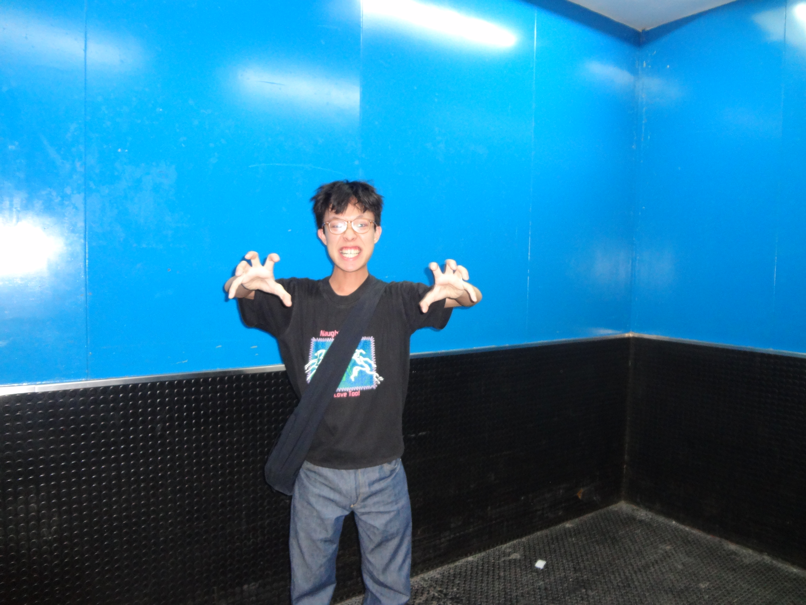

Sorry for the terrifying photo. Click here for a more professional impression.
Having worked as an in-house, agency, and freelance designer, I have been lucky enough to work with
organisations such as Singapore Night Festival, Singapore Chinese Orchestra, and ArtsWok
Collaborative.
Recently discovered a love for placing my work in community-driven or artist
spaces. Contact me with any ideas for collaboration!
Experience
akk (Personal Practice)
2018 - Present
Freelance Graphic Design and Independent
Projects
Dawn Ng Studio
2022 - 2025
Ad-hoc Graphic Designer
Currency Design
2021
Junior Graphic Designer
Morning
2020
Design Intern
wheniwasfour
2018
Design Intern
Education
Singapore Polytechnic
Diploma in Experience and Product Design
Lasalle College of the Arts
BA(Hons) Design Communication
Design Academy Eindhoven
Studio Body Building (Exchange Semester)
Achievements/Participation
Tan Chay Bing Scholarship
Issued by Lasalle College of the Arts
2024
Singapore Art Book Fair
Booth under collective Summer Summit
2023
Form Flux Futures
National Design Centre
2024